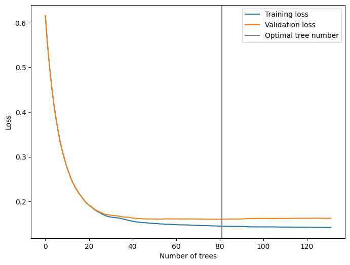

import pandas as pd
import numpy as np
import matplotlib.pyplot as plt
from sklearn.metrics import precision_score, accuracy_score, recall_score, f1_score, roc_auc_score, roc_curve, auc
from sklearn.preprocessing import LabelEncoder
from sklearn.impute import SimpleImputer
from sklearn.preprocessing import StandardScaler, OneHotEncoder
from sklearn.model_selection import StratifiedKFold
from sklearn.compose import ColumnTransformer
from sklearn.model_selection import train_test_split, cross_val_score, cross_validate, cross_val_predict
from sklearn.utils import resample
from sklearn.pipeline import Pipeline
from sklearn.model_selection import GridSearchCV
from sklearn.model_selection import RandomizedSearchCV
import scipy.stats
from skopt import BayesSearchCV
from skopt.space import Real, Integer, Categorical
from sklearn.model_selection import train_test_split
from sklearn.linear_model import LogisticRegression
from sklearn.ensemble import RandomForestClassifier
from sklearn.svm import SVC
from xgboost import XGBClassifier
from sklearn.neural_network import MLPClassifier
import timeData
- 데이터 출처
- https://www.kaggle.com/datasets/fedesoriano/stroke-prediction-dataset/data
data = pd.read_csv("healthcare-dataset-stroke-data.csv")
data = data.drop(['id'], axis=1)
data = data[data['gender'] != 'Other']
data.head()
df = data.copy()
df.loc[:, ["hypertension", "heart_disease", "stroke"]] = data.loc[:, ["hypertension", "heart_disease", "stroke"]].applymap(lambda x: "Yes" if x == 1 else "No")
df.head()| gender | age | hypertension | heart_disease | ever_married | work_type | Residence_type | avg_glucose_level | bmi | smoking_status | stroke | |
|---|---|---|---|---|---|---|---|---|---|---|---|
| 0 | Male | 67.0 | No | Yes | Yes | Private | Urban | 228.69 | 36.6 | formerly smoked | Yes |
| 1 | Female | 61.0 | No | No | Yes | Self-employed | Rural | 202.21 | NaN | never smoked | Yes |
| 2 | Male | 80.0 | No | Yes | Yes | Private | Rural | 105.92 | 32.5 | never smoked | Yes |
| 3 | Female | 49.0 | No | No | Yes | Private | Urban | 171.23 | 34.4 | smokes | Yes |
| 4 | Female | 79.0 | Yes | No | Yes | Self-employed | Rural | 174.12 | 24.0 | never smoked | Yes |
X = df.drop(["stroke"], axis=1)
y = LabelEncoder().fit_transform(df['stroke'])
X_num = X.select_dtypes(include = 'number')
X_cat = X.select_dtypes(exclude = 'number')
X[X_num.columns] = SimpleImputer(strategy="mean").fit_transform(X_num)
X[X_cat.columns] = SimpleImputer(strategy="most_frequent").fit_transform(X_cat)scaler = StandardScaler()
onehot = OneHotEncoder(drop = 'first', handle_unknown='ignore', sparse_output=False)
ct = ColumnTransformer([('scaler', scaler, X_num.columns),
('onehot', onehot, X_cat.columns)],
remainder='passthrough', n_jobs=-1)
ctColumnTransformer(n_jobs=-1, remainder='passthrough',
transformers=[('scaler', StandardScaler(),
Index(['age', 'avg_glucose_level', 'bmi'], dtype='object')),
('onehot',
OneHotEncoder(drop='first',
handle_unknown='ignore',
sparse_output=False),
Index(['gender', 'hypertension', 'heart_disease', 'ever_married', 'work_type',
'Residence_type', 'smoking_status'],
dtype='object'))])In a Jupyter environment, please rerun this cell to show the HTML representation or trust the notebook. On GitHub, the HTML representation is unable to render, please try loading this page with nbviewer.org.
ColumnTransformer(n_jobs=-1, remainder='passthrough',
transformers=[('scaler', StandardScaler(),
Index(['age', 'avg_glucose_level', 'bmi'], dtype='object')),
('onehot',
OneHotEncoder(drop='first',
handle_unknown='ignore',
sparse_output=False),
Index(['gender', 'hypertension', 'heart_disease', 'ever_married', 'work_type',
'Residence_type', 'smoking_status'],
dtype='object'))])Index(['age', 'avg_glucose_level', 'bmi'], dtype='object')
StandardScaler()
Index(['gender', 'hypertension', 'heart_disease', 'ever_married', 'work_type',
'Residence_type', 'smoking_status'],
dtype='object')OneHotEncoder(drop='first', handle_unknown='ignore', sparse_output=False)
passthrough
X_train, X_test, y_train, y_test = train_test_split(X, y, test_size=0.2, random_state=42, stratify=y)ct.fit(X_train)ColumnTransformer(n_jobs=-1, remainder='passthrough',
transformers=[('scaler', StandardScaler(),
Index(['Age', 'eGFR', 'SBP', 'DBP', 'HbA1c', 'Creatinine', 'Hemoglobin'], dtype='object')),
('onehot',
OneHotEncoder(drop='first',
handle_unknown='ignore',
sparse_output=False),
Index(['Sex', 'Hypertension', 'Dyslipidemia', 'Heart', 'Stroke',
'Diabetic medicine', 'Insulin', 'Arb Acei', 'Diuretics', 'Statin'],
dtype='object'))])In a Jupyter environment, please rerun this cell to show the HTML representation or trust the notebook. On GitHub, the HTML representation is unable to render, please try loading this page with nbviewer.org.
ColumnTransformer(n_jobs=-1, remainder='passthrough',
transformers=[('scaler', StandardScaler(),
Index(['Age', 'eGFR', 'SBP', 'DBP', 'HbA1c', 'Creatinine', 'Hemoglobin'], dtype='object')),
('onehot',
OneHotEncoder(drop='first',
handle_unknown='ignore',
sparse_output=False),
Index(['Sex', 'Hypertension', 'Dyslipidemia', 'Heart', 'Stroke',
'Diabetic medicine', 'Insulin', 'Arb Acei', 'Diuretics', 'Statin'],
dtype='object'))])Index(['Age', 'eGFR', 'SBP', 'DBP', 'HbA1c', 'Creatinine', 'Hemoglobin'], dtype='object')
StandardScaler()
Index(['Sex', 'Hypertension', 'Dyslipidemia', 'Heart', 'Stroke',
'Diabetic medicine', 'Insulin', 'Arb Acei', 'Diuretics', 'Statin'],
dtype='object')OneHotEncoder(drop='first', handle_unknown='ignore', sparse_output=False)
[]
passthrough
- 조기 중단(
early_stopooing_rounds)- 검증 데이터셋의 손실 값이 증가하기 시작할 때(손실을 최소화하는 경우) 훈련을 중단하는 기법.
- 따라서 모델을 훈련시키기 위해서는 두 개의 별도 데이터셋 필요
- 모델 피팅을 위한 훈련 데이터
- 손실 모니터링과 조기 중단을 위한 검증 데이터
- Xgboost 알고리즘에서는
early_stoping_rounds매개변수가 손실 값이 다음으로 감소할 때까지 기다릴 허용 범위를 제어. - 이 매개변수가 필요한 이유는 각 반복마다 손실 값이 무작위로 감소하기 때문입니다. 검증 손실은 일정 범위 내에서 변동할 수 있으며, 몇 번의 반복 후에 감소할 수 있습니다.
- 일반적으로 조기 중단을 위해 50번의 반복을 사용하며, 보통 1000개의 트리와 함께 사용.
- 전체 반복 횟수의 10%를 조기 중단에 사용하는 것이 합리적이라는 몇 가지 경험적인 법칙이 있습니다.
https://mljar.com/blog/xgboost-early-stopping/
# learning_rate, n_estimators, max_depth, min_child_weight, gamma, subsample, colsample_bytree, scale_pos_weight, early_stopping_rounds
predictr = XGBClassifier(learning_rate = 0.1,
n_estimators = 1000,
max_depth = 3,
min_child_weight = 3,
gamma = 5,
subsample = 0.5,
colsample_bytree = 0.5,
random_state = 42,
scale_pos_weight = 1,
eval_metric='logloss',
early_stopping_rounds = 50)start_time = time.time()
predictr.fit(ct.fit_transform(X_train), y_train, eval_set = [(ct.fit_transform(X_train), y_train), (ct.transform(X_test), y_test)], verbose=2)
end_time = time.time()
print("코드 실행 시간: {:.1f} 초".format(end_time - start_time))[0] validation_0-logloss:0.61542 validation_1-logloss:0.61582
[2] validation_0-logloss:0.49849 validation_1-logloss:0.49832
[4] validation_0-logloss:0.41477 validation_1-logloss:0.41376
[6] validation_0-logloss:0.35415 validation_1-logloss:0.35375
[8] validation_0-logloss:0.30894 validation_1-logloss:0.30850
[10] validation_0-logloss:0.27531 validation_1-logloss:0.27517
[12] validation_0-logloss:0.24932 validation_1-logloss:0.24899
[14] validation_0-logloss:0.22942 validation_1-logloss:0.22914
[16] validation_0-logloss:0.21511 validation_1-logloss:0.21476
[18] validation_0-logloss:0.20194 validation_1-logloss:0.20147
[20] validation_0-logloss:0.19201 validation_1-logloss:0.19223
[22] validation_0-logloss:0.18444 validation_1-logloss:0.18521
[24] validation_0-logloss:0.17758 validation_1-logloss:0.17886
[26] validation_0-logloss:0.17243 validation_1-logloss:0.17448
[28] validation_0-logloss:0.16791 validation_1-logloss:0.17113
[30] validation_0-logloss:0.16564 validation_1-logloss:0.16954
[32] validation_0-logloss:0.16400 validation_1-logloss:0.16838
[34] validation_0-logloss:0.16320 validation_1-logloss:0.16734
[36] validation_0-logloss:0.16056 validation_1-logloss:0.16533
[38] validation_0-logloss:0.15846 validation_1-logloss:0.16500
[40] validation_0-logloss:0.15608 validation_1-logloss:0.16323
[42] validation_0-logloss:0.15435 validation_1-logloss:0.16213
[44] validation_0-logloss:0.15344 validation_1-logloss:0.16196
[46] validation_0-logloss:0.15268 validation_1-logloss:0.16116
[48] validation_0-logloss:0.15184 validation_1-logloss:0.16104
[50] validation_0-logloss:0.15087 validation_1-logloss:0.16108
[52] validation_0-logloss:0.15035 validation_1-logloss:0.16062
[54] validation_0-logloss:0.14999 validation_1-logloss:0.16069
[56] validation_0-logloss:0.14920 validation_1-logloss:0.16138
[58] validation_0-logloss:0.14886 validation_1-logloss:0.16152
[60] validation_0-logloss:0.14839 validation_1-logloss:0.16130
[62] validation_0-logloss:0.14797 validation_1-logloss:0.16114
[64] validation_0-logloss:0.14796 validation_1-logloss:0.16114
[66] validation_0-logloss:0.14771 validation_1-logloss:0.16111
[68] validation_0-logloss:0.14702 validation_1-logloss:0.16121
[70] validation_0-logloss:0.14687 validation_1-logloss:0.16092
[72] validation_0-logloss:0.14622 validation_1-logloss:0.16075
[74] validation_0-logloss:0.14622 validation_1-logloss:0.16075
[76] validation_0-logloss:0.14567 validation_1-logloss:0.16060
[78] validation_0-logloss:0.14567 validation_1-logloss:0.16061
[80] validation_0-logloss:0.14501 validation_1-logloss:0.16035
[82] validation_0-logloss:0.14469 validation_1-logloss:0.16064
[84] validation_0-logloss:0.14469 validation_1-logloss:0.16064
[86] validation_0-logloss:0.14451 validation_1-logloss:0.16104
[88] validation_0-logloss:0.14450 validation_1-logloss:0.16105
[90] validation_0-logloss:0.14451 validation_1-logloss:0.16104
[92] validation_0-logloss:0.14390 validation_1-logloss:0.16153
[94] validation_0-logloss:0.14350 validation_1-logloss:0.16223
[96] validation_0-logloss:0.14352 validation_1-logloss:0.16225
[98] validation_0-logloss:0.14352 validation_1-logloss:0.16228
[100] validation_0-logloss:0.14352 validation_1-logloss:0.16226
[102] validation_0-logloss:0.14352 validation_1-logloss:0.16224
[104] validation_0-logloss:0.14335 validation_1-logloss:0.16212
[106] validation_0-logloss:0.14334 validation_1-logloss:0.16214
[108] validation_0-logloss:0.14308 validation_1-logloss:0.16238
[110] validation_0-logloss:0.14308 validation_1-logloss:0.16238
[112] validation_0-logloss:0.14307 validation_1-logloss:0.16238
[114] validation_0-logloss:0.14289 validation_1-logloss:0.16258
[116] validation_0-logloss:0.14290 validation_1-logloss:0.16257
[118] validation_0-logloss:0.14290 validation_1-logloss:0.16257
[120] validation_0-logloss:0.14271 validation_1-logloss:0.16270
[122] validation_0-logloss:0.14270 validation_1-logloss:0.16271
[124] validation_0-logloss:0.14243 validation_1-logloss:0.16287
[126] validation_0-logloss:0.14243 validation_1-logloss:0.16287
[128] validation_0-logloss:0.14204 validation_1-logloss:0.16267
[130] validation_0-logloss:0.14204 validation_1-logloss:0.16268
코드 실행 시간: 6.4 초print('반복 횟수 : %d, 평가 지표 : %s' % (predictr.best_iteration, predictr.eval_metric))반복 횟수 : 81, 평가 지표 : loglossfrom matplotlib import pyplot as plt
results = predictr.evals_result()
plt.figure(figsize=(8,6))
plt.plot(results["validation_0"]["logloss"], label="Training loss")
plt.plot(results["validation_1"]["logloss"], label="Validation loss")
plt.axvline(predictr.best_iteration, color="gray", label="Optimal tree number")
plt.xlabel("Number of trees")
plt.ylabel("Loss")
plt.legend();
튜닝 + early stopping
https://scikit-learn.org/stable/modules/generated/sklearn.pipeline.Pipeline.html#sklearn.pipeline.Pipeline
predictr = XGBClassifier(n_estimators = 1000,
random_state = 42,
scale_pos_weight = 1,
eval_metric='logloss',
early_stopping_rounds = 50)
pipe = Pipeline([('ct', ct), ("XGBoost", predictr)]);pipePipeline(steps=[('ct',
ColumnTransformer(n_jobs=-1, remainder='passthrough',
transformers=[('scaler', StandardScaler(),
Index(['age', 'avg_glucose_level', 'bmi'], dtype='object')),
('onehot',
OneHotEncoder(drop='first',
handle_unknown='ignore',
sparse_output=False),
Index(['gender', 'hypertension', 'heart_disease', 'ever_married', 'work_type',
'Residence_type', 'smok...
feature_types=None, gamma=None, gpu_id=None,
grow_policy=None, importance_type=None,
interaction_constraints=None, learning_rate=None,
max_bin=None, max_cat_threshold=None,
max_cat_to_onehot=None, max_delta_step=None,
max_depth=None, max_leaves=None,
min_child_weight=None, missing=nan,
monotone_constraints=None, n_estimators=1000,
n_jobs=None, num_parallel_tree=None,
predictor=None, random_state=42, ...))])In a Jupyter environment, please rerun this cell to show the HTML representation or trust the notebook. On GitHub, the HTML representation is unable to render, please try loading this page with nbviewer.org.
Pipeline(steps=[('ct',
ColumnTransformer(n_jobs=-1, remainder='passthrough',
transformers=[('scaler', StandardScaler(),
Index(['age', 'avg_glucose_level', 'bmi'], dtype='object')),
('onehot',
OneHotEncoder(drop='first',
handle_unknown='ignore',
sparse_output=False),
Index(['gender', 'hypertension', 'heart_disease', 'ever_married', 'work_type',
'Residence_type', 'smok...
feature_types=None, gamma=None, gpu_id=None,
grow_policy=None, importance_type=None,
interaction_constraints=None, learning_rate=None,
max_bin=None, max_cat_threshold=None,
max_cat_to_onehot=None, max_delta_step=None,
max_depth=None, max_leaves=None,
min_child_weight=None, missing=nan,
monotone_constraints=None, n_estimators=1000,
n_jobs=None, num_parallel_tree=None,
predictor=None, random_state=42, ...))])ColumnTransformer(n_jobs=-1, remainder='passthrough',
transformers=[('scaler', StandardScaler(),
Index(['age', 'avg_glucose_level', 'bmi'], dtype='object')),
('onehot',
OneHotEncoder(drop='first',
handle_unknown='ignore',
sparse_output=False),
Index(['gender', 'hypertension', 'heart_disease', 'ever_married', 'work_type',
'Residence_type', 'smoking_status'],
dtype='object'))])Index(['age', 'avg_glucose_level', 'bmi'], dtype='object')
StandardScaler()
Index(['gender', 'hypertension', 'heart_disease', 'ever_married', 'work_type',
'Residence_type', 'smoking_status'],
dtype='object')OneHotEncoder(drop='first', handle_unknown='ignore', sparse_output=False)
[]
passthrough
XGBClassifier(base_score=None, booster=None, callbacks=None,
colsample_bylevel=None, colsample_bynode=None,
colsample_bytree=None, early_stopping_rounds=50,
enable_categorical=False, eval_metric='logloss',
feature_types=None, gamma=None, gpu_id=None, grow_policy=None,
importance_type=None, interaction_constraints=None,
learning_rate=None, max_bin=None, max_cat_threshold=None,
max_cat_to_onehot=None, max_delta_step=None, max_depth=None,
max_leaves=None, min_child_weight=None, missing=nan,
monotone_constraints=None, n_estimators=1000, n_jobs=None,
num_parallel_tree=None, predictor=None, random_state=42, ...)param_dist = {
'XGBoost__learning_rate': scipy.stats.uniform(0.01, 1.99),
'XGBoost__n_estimators': scipy.stats.randint(50, 150),
'XGBoost__max_depth': scipy.stats.randint(4, 8),
'XGBoost__colsample_bytree': scipy.stats.uniform(0.4, 0.4),
'XGBoost__gamma' : scipy.stats.randint(3, 6),
'XGBoost__min_child_weight' : scipy.stats.randint(8, 16),
'XGBoost__subsample' : scipy.stats.uniform(0.4, 0.4),
}start_time = time.time()
predictr_rs = RandomizedSearchCV(pipe,
param_dist,
n_iter = 10, # default
cv=5,
scoring='accuracy',
random_state=42,
refit = True,
n_jobs = -1)
fit_params = {"XGBoost__eval_set" : [(ct.fit_transform(X_train), y_train)]}
verbose = {"XGBoost__verbose": False}
predictr_rs.fit(X_train, y_train, **fit_params, **verbose)
pipe.set_params(**{key: round(value, 2) for key, value in predictr_rs.best_params_.items()}).fit(X_train, y_train, **fit_params, **verbose)
end_time = time.time()
print("코드 실행 시간: {:.1f} 초".format(end_time - start_time))코드 실행 시간: 6.1 초start_time = time.time()
scores = cross_validate(estimator = pipe,
X=X_train,
y=y_train,
fit_params = fit_params,
scoring = ['accuracy', 'roc_auc'],
cv=5,
n_jobs = -1)
accuracy_score_rs = np.mean(scores['test_accuracy']).round(4);accuracy_score
roc_auc_score_rs = np.mean(scores['test_roc_auc']).round(4);roc_auc_score
end_time = time.time()
print("코드 실행 시간: {:.1f} 초".format(end_time - start_time))[0] validation_0-logloss:0.44247
코드 실행 시간: 0.9 초print("Best Parameters: ", predictr_rs.best_params_)
print("Best Parameters after round: ", pipe.named_steps["XGBoost"].set_params)
print("Best Score in CV: ", predictr_rs.best_score_)
print("mean Score after round:", accuracy_score_rs)
print("Best test Score: ", pipe.named_steps["XGBoost"].score(ct.transform(X_test), y_test))Best Parameters: {'XGBoost__colsample_bytree': 0.5498160475389451, 'XGBoost__gamma': 3, 'XGBoost__learning_rate': 0.37503523183366594, 'XGBoost__max_depth': 7, 'XGBoost__min_child_weight': 12, 'XGBoost__n_estimators': 70, 'XGBoost__subsample': 0.46240745617697465}
Best Parameters after round: <bound method XGBModel.set_params of XGBClassifier(base_score=None, booster=None, callbacks=None,
colsample_bylevel=None, colsample_bynode=None,
colsample_bytree=0.55, early_stopping_rounds=50,
enable_categorical=False, eval_metric='logloss',
feature_types=None, gamma=3, gpu_id=None, grow_policy=None,
importance_type=None, interaction_constraints=None,
learning_rate=0.38, max_bin=None, max_cat_threshold=None,
max_cat_to_onehot=None, max_delta_step=None, max_depth=7,
max_leaves=None, min_child_weight=12, missing=nan,
monotone_constraints=None, n_estimators=70, n_jobs=None,
num_parallel_tree=None, predictor=None, random_state=42, ...)>
Best Score in CV: 0.9515533303606432
mean Score after round: 0.9511
Best test Score: 0.9510763209393346